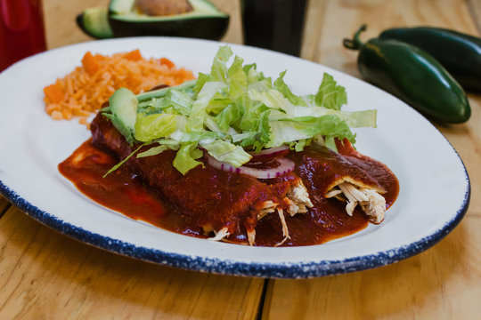
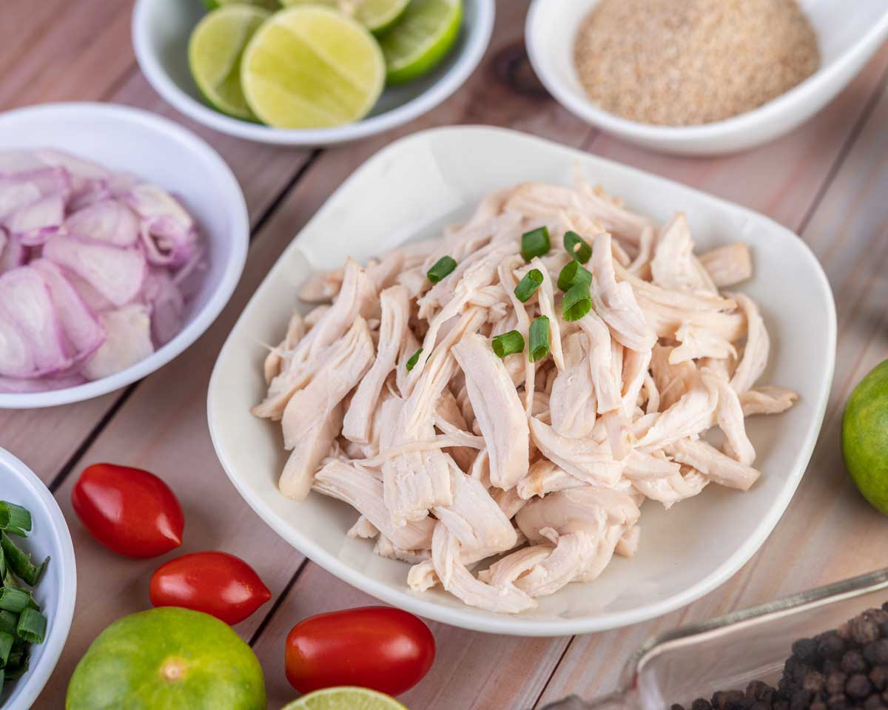

Enchiladas

Red enchiladas from a mexican.
How many people don't like Mexican food?
Everyone loves it! That's why, today i will teach
you how to make your very own enchiladas for meal,
and believe me... You will LOVE THEM!
So, what are we waiting for and lets cook together again!
Nothing better than Mexican food from a Mexican
CAUTION!
The spicy of the food will be defined by the amount of peppers and
chilli you use and if you remove the seeds and veins of the peppers and chilli,
so I recommend you to clean the better you can your peppers and chilli.
CAUTION!
Let's checkout our ingredients:
- Four guajillo chilli
- Four Ancho chilli
- Two chopped garlics
- A quarter spoon of cilantro
- Salt and black pepper spinach
- Twelve tortillas (The bigger the better)
- Two cups of shredded chicken or pig
- One and half cup of crumbled fresh cheese
- A half of chopped onion
- One third of vegetable oil
If you want, you can make some potatoes to complete the food
Now lets follow the steps to make red enchiladas
- Let's start with the sauce: Lightly toast the chilli on a hot comal,
pressing them with the help of a spatula, but making sure not to
burn them. (This step takes only a few seconds on each side).
- Once the chilli are roasted, place them in a saucepan with water
and cook over low heat for 15 minutes, or until soft.
- Remove the pot from the heat and let the chilli cool for 10 to 15 minutes.
(Remember that these should be soft and squishy).
- After the chilli have cooled, drain them and place them in the blender
along with the garlic cloves; Add half of cup of clean water and blend
until you obtain a smooth sauce. (If the sauce is very thick or the chilli
were not ground well, it is necessary to pass it through a fine strainer).
Season with oregano, salt and black pepper.
- Preheat the oven to 350F (180C) to keep the enchiladas warm while
you finish assembling.
- In a large skillet add the 2 tablespoons of vegetable oil and heat it
over medium heat. (Be adding the oil little by little — as necessary —
while frying the tortillas, since if you add it all at once the tortillas
will absorb it and break.)
- Dip the tortillas one by one into the sauce until both sides are
thoroughly moistened.
- Then place the tortilla in the pan with the hot oil and fry on
both sides. (This only takes a few seconds.) Place the enchilada
on a plate. Add more oil to the pan as needed and continue with
the process of frying the tortillas: first you pass them through
the sauce and then through the oil. Place the plate where you
are placing the enchiladas in the preheated oven to keep them
warm while you finish frying the rest of the tortillas.
- To serve the enchiladas, first place the filling of your choice in
the center of the tortilla and then fold or roll it.
- Sprinkle enchiladas with cheese and onion; Add any other
garnish to your liking, and... enjoy!

And that's all! Enjoy your enchiladas and i hope you can test more
Mexican food, we have all our recipes in this website.